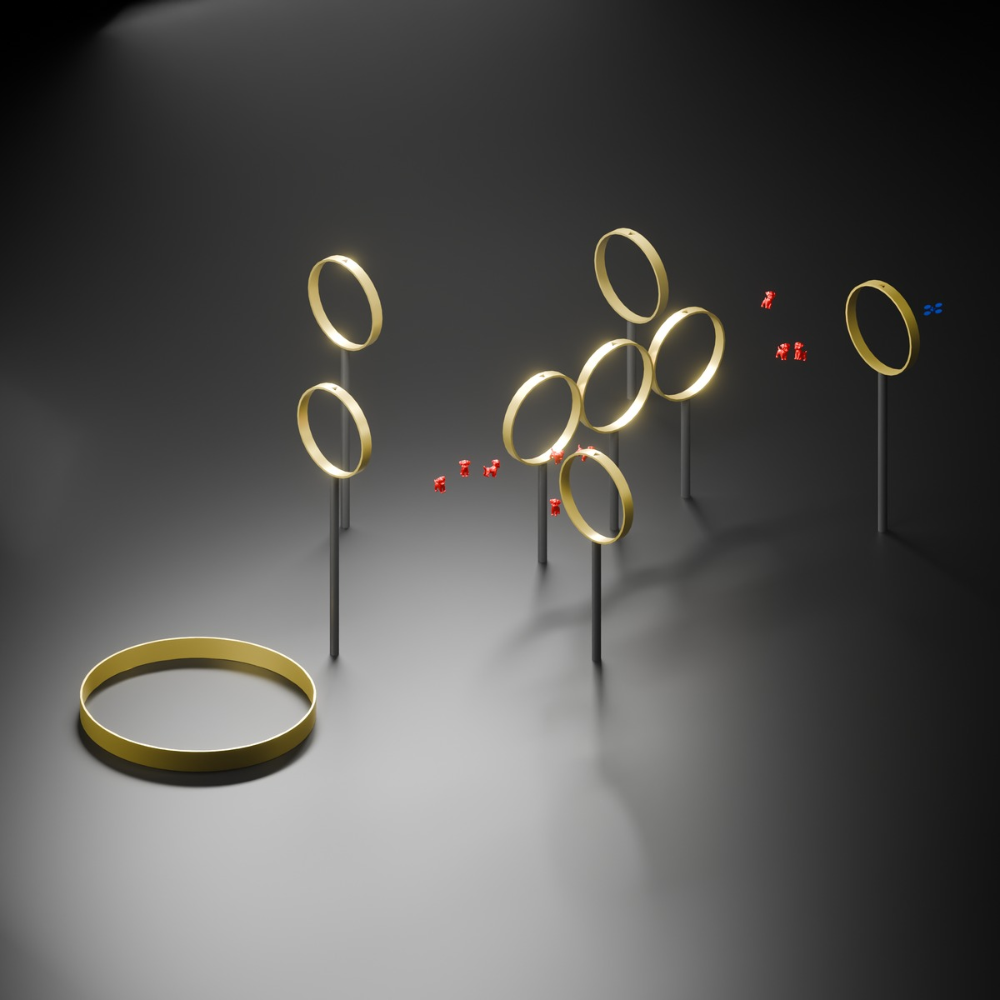
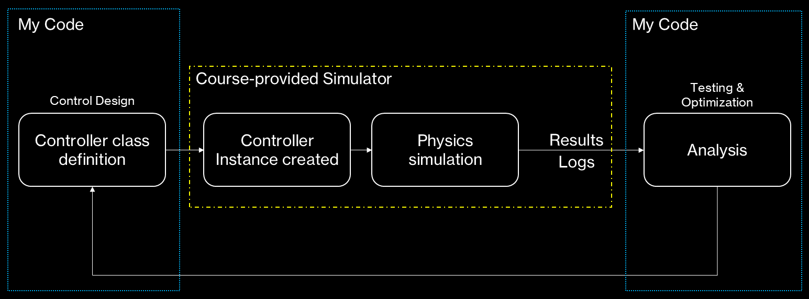
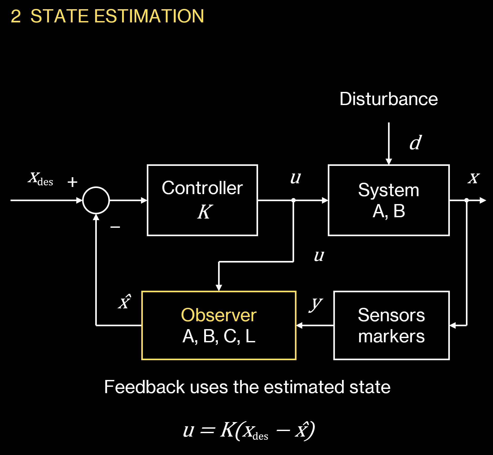
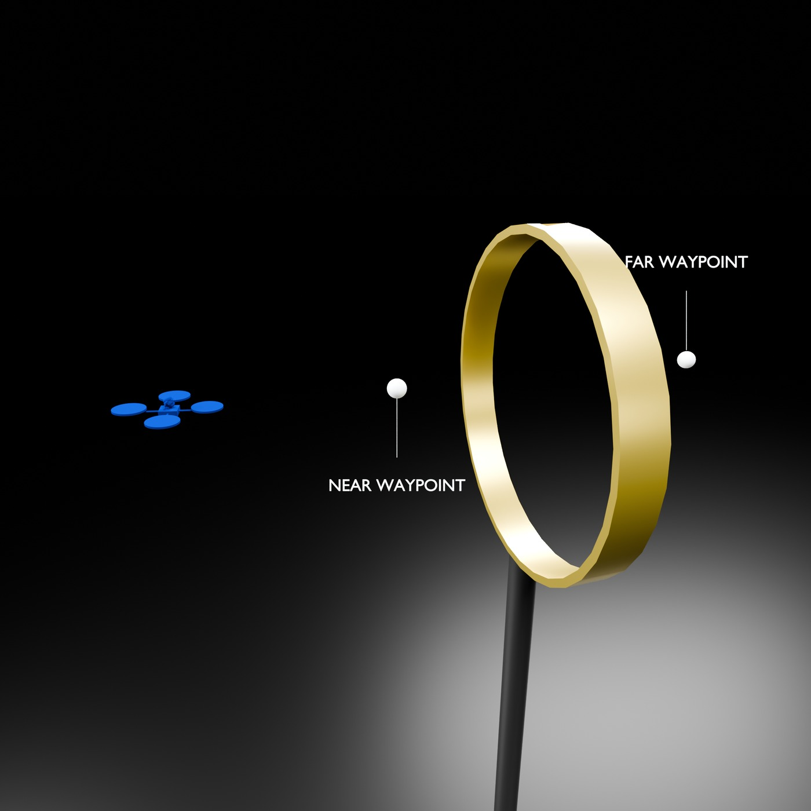
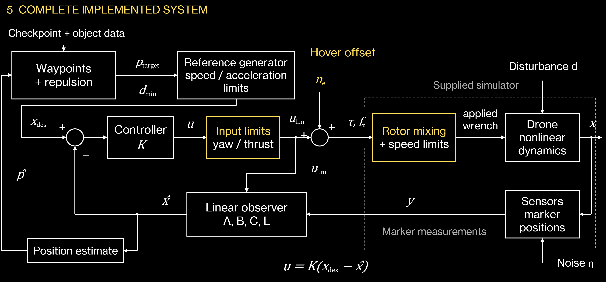
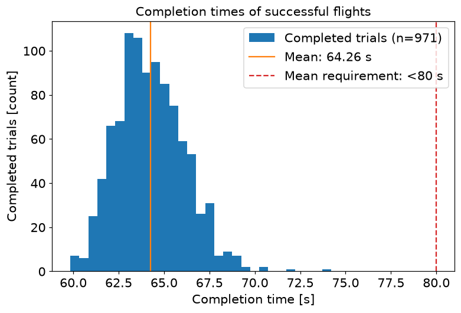
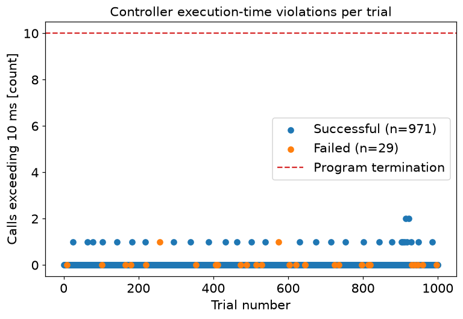
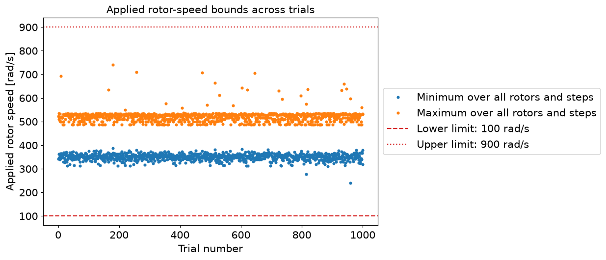
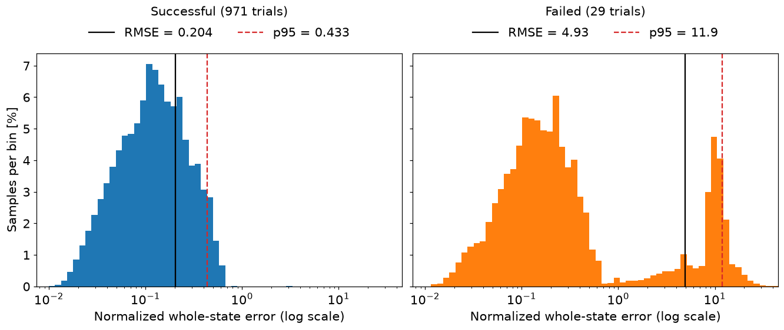
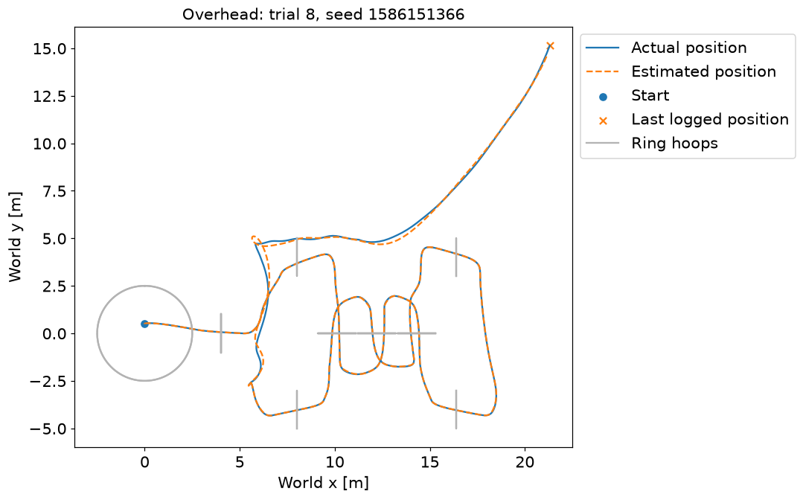

01 / Autonomous flight control / Evaluated in PyBullet simulation
AE353 DP4 · Maxwell Lutter & Landon Lopez · Individual extensions, October 2026
Designing and testing an autonomous drone race controller
A stable hover controller is only the beginning of a drone race. The drone must estimate its motion from noisy measurements, pass through rings in the right direction, avoid obstacles, and finish within the timing rules. I developed the final navigation code with Landon Lopez, then revisited the design to smooth its reference motion and build a more detailed automated evaluation.


- My contribution
- Modeling, control design, final navigation code, simulation automation, and later individual refinements
- Tools
- Python · LQR · State estimation · PyBullet · Automated testing
- Outcome
- 971/1,000 completions · 64.26 s mean among successful runs in the later study
The mission and its acceptance criteria
The assignment was to design a feedback controller for a quadrotor racing through a three-dimensional course. Ring heights and static obstacle positions vary between trials. A finish counts only after the drone passes the checkpoints in the required order and direction and enters the finish region.
The controller receives noisy marker measurements and course information. It must estimate the vehicle state, generate a navigable reference, and return body torques and total thrust on every update. I treated completion, speed, computation time, and actuator limits as separate checks.
| Check | Criterion |
|---|---|
| Course completion | More than 80% of a defined randomized trial cohort |
| Completion time | Mean below 80 seconds across successful runs |
| Controller execution | No more than nine calls above 10 ms in a trial |
| Applied rotor speeds | Within the simulator’s 100–900 rad/s limits |
My work, our shared work, and the later extensions
Later individual work: refined controller parameters, smoother reference transitions, expanded simulation testing, richer performance metrics, and the presentation visuals.
The original course project was a collaboration. The presentation separates that team work from the additional controller development and analysis I completed afterward.
Maxwell Lutter
System modeling and control design; navigation strategy and final controller development; simulation automation and visualization.
Landon Lopez
Controller implementation and obstacle avoidance; experimental methods and results analysis; report structure and technical writing.
Shared work
Technical decisions and the final report. The report identifies me as the primary developer of the final drone code.
The supplied simulator handles physics, synthetic sensor measurements, motor mixing and limiting, and scoring. My project code designs and implements the controller and navigation, runs repeated experiments, and analyzes the resulting logs.
The simulator and the software boundary
The course-provided PyBullet simulator advances at 25 Hz, with a 0.04-second time step. The online observer receives the noisy world-frame positions of two markers on the drone. The navigation code also receives the next ring’s position and direction and the object information exposed by the simulator.
Full-state logs make offline comparisons possible, but the feedback loop uses the observer’s estimate. Keeping the simulation and controller separate makes it possible to change gains or guidance logic while holding the course rules and physics fixed.


Model the vehicle, stabilize it, and estimate its motion
I linearized the nonlinear dynamics and marker measurement model about hover. The 12-state model includes position, attitude, linear velocity, and angular velocity. Symbolic Jacobians produce the state-space matrices used for gain design.
LQR provides a systematic way to balance state error against control effort. The controller and observer gains come from continuous algebraic Riccati equations, with stability checked through the corresponding closed-loop eigenvalues. A linear observer combines model prediction with marker measurement residuals; the implementation advances that estimate with forward Euler integration.
The observer gain uses dual-LQR tuning weights. It is not a demonstrated Kalman filter based on identified noise covariances. The hover approximation also becomes less accurate during aggressive motion, so guidance must ask the stabilizing controller to follow a reasonable trajectory.
- Linearized model about hover
δẋ = Aδx + Bδu δy = Cδx- State feedback in deviation coordinates
u = K(xdes − x̂)- Continuous-time observer
x̂̇ = Ax̂ + Bu + L(y − Cx̂)- LQR cost
J = ∫₀∞ (eᵀQe + uᵀRu) dt


Choose waypoints that make ring crossings reliable
Early visual trials exposed a limitation of aiming directly at each ring center: the drone could cut across the ring wall or support. Adding only an entry waypoint still caused failures in the central weaving section. Entry and exit offsets gave the controller a defined approach and departure direction, at the cost of a longer route and more navigation state.
The simulator changes its active checkpoint as the drone crosses the ring plane. The controller therefore remembers ring centers and normals and keeps the current visit locked until the departure waypoint is reached. This prevents an early target switch from abandoning the intended crossing.
| Strategy | Observed behavior | Decision |
|---|---|---|
| Ring center only | Direct path, but repeated collisions with walls and supports | Rejected |
| Entry offset only | Improved approach, but unreliable in the weaving section | Rejected |
| Entry and exit offsets | Longer route with the most consistent ring passage | Selected |


Avoid obstacles without asking for abrupt maneuvers
Distance-dependent repulsion shifts the nominal target away from nearby objects and ring edges. Separate gains for rings and other obstacles preserve clearance without making the drone unnecessarily detour around a ring it must pass through.
Slowing the entire flight was safe but costly. Removing speed limits invited overshoot. The selected approach applies local speed limits near hazards and permits faster travel in open space. The later revision uses a continuous smoothstep schedule and limits reference acceleration, reducing abrupt changes in the desired motion.
The guidance layer produces a moving desired state. LQR follows that state using the observer estimate, then the implementation clips its configured yaw and thrust commands before returning them. The simulator separately converts the requested wrench to bounded rotor speeds.


Implement the loop as an inspectable Python class
The simulator calls a Controller object through three entry points. Initialization loads the model, gains, and navigation parameters. reset establishes the starting estimate and clears course history. run executes the flight logic once per simulation update.
Helper methods separate waypoint selection, ring memory, nearest-hoop geometry, repulsion, local speed selection, and reference propagation. That separation makes a visible flight problem easier to trace to a specific decision in the code.
Select the active waypoint
Register ring geometry, choose the entry, exit, or landing target, and retain an unfinished ring visit.
Account for nearby hazards
Find the closest hoop point and add ring and object repulsion to the nominal target.
Advance the moving reference
Choose local speed limits and update reference velocity and position with acceleration limits.
Apply feedback and update the estimate
Compute the control input from the desired and estimated states and propagate the observer.
Return bounded commands
Clip the configured yaw/thrust requests and return body torques and total thrust to the simulator.
Build testing around the behavior that matters
Visual testing came first. Slow height gain and collisions with poles prompted changes to the vertical state cost. Repeated failures near the weaving section led to the entry/exit waypoint strategy. Watching the simulator connected a symptom to a model or navigation decision.
The automated loop then evaluated parameter candidates over repeated randomized simulations. Inputs include controller weights, obstacle gains, and reference speed and acceleration limits. Completion criteria screen candidates before finish-time scores guide selection; state-error and failed-trajectory plots help explain the outcome.
Manual variation was useful while establishing viable behavior. Random search made it easy to explore and narrow ranges. As the parameter list grew, Latin hypercube sampling spread samples across each parameter’s range without the combinatorial cost of a full grid. It improves marginal coverage, but does not cover every parameter interaction.
| Method | Use in this project | Limitation |
|---|---|---|
| Manual variation | Connect deliberate changes to observed flight behavior | Difficult to manage many parameters |
| Random search | Explore candidates and refine promising ranges | A fixed budget can leave gaps and clusters |
| Latin hypercube | Spread evaluations across each parameter range | No guarantee of coverage of all combinations |
| Grid search | Considered, but not selected for the full parameter set | Evaluation count grows rapidly with added parameters |
Watch one flight in two views
Both videos show the same recorded trial at simulation speed. The original simulator view preserves the course presentation. The Blender view replays the captured vehicle poses and adds explanatory traces for actual position, estimated position, desired position and velocity, and the current nominal waypoint.
This illustrative flight finishes at 59.72 seconds with seed 973904070. It is a separate recording using the saved tuned controller, not the mean or a member of the later 1,000-trial evaluation. The rendering changes presentation colors and lighting, not the recorded flight path.
Original course simulator
Annotated flight replay
Evaluate completion, speed, timing, and actuator bounds
The later evaluation completed 971 of 1,000 randomized trials, with a 64.26-second mean among successful runs.
A saved 1,000-seed cohort provides the evidence for the extended design. Successful completion times range from 59.84 to 74.20 seconds. The completion rate and successful-run mean satisfy the stated course targets; the 29 failures remain part of the completion denominator.
All 1,000 trials met the permitted execution-time violation count. The largest count was two calls above 10 ms in a trial, below the allowed nine. Rare slow calls still occurred, so this is measured simulator-host performance rather than an onboard real-time guarantee.
Applied rotor speeds stayed within the simulator’s 100–900 rad/s range. Those values are measured after motor limiting. They confirm the applied bounds, but do not establish that the controller’s requested inputs never saturated.
- 971 / 1,000 completions
- 97.1%
- Mean of 971 finishes
- 64.26 s
- Maximum above 10 ms / trial
- 2 calls
- Applied rotor limits
- 100–900 rad/s






Use state errors and failed trajectories to diagnose the gaps
Completion alone does not explain why a controller works or fails. I compared full-state estimation errors for successful and failed flights using position, attitude, velocity, and angular-rate metrics, including RMSE and the 95th percentile.
The normalized whole-state score uses comparison scales of 0.1 m, 0.1 rad, 0.5 m/s, and 0.5 rad/s. These are analysis weights, not acceptance limits. Histograms pool time-step samples by outcome, so longer flights contribute more samples.
The 29 failed trials ended with 16 inactivity terminations and 13 out-of-bounds terminations. A plotted example shows estimated and actual trajectories diverging near the course geometry. It suggests a possible collision-related disturbance, but the termination logs and trajectory alone do not prove that cause.




What improved, and what the results demonstrate
The original team report recorded 95 completions in 100 trials and a 73.35-second mean among successful runs. The later individual extension recorded 971 in 1,000 and a 64.26-second successful-run mean, about 12.4% lower.
These are separate studies with different trial cohorts, not a paired comparison on identical seeds. The observed completion-rate increase has not been established as statistically significant. The original report remains linked below as evidence of the submitted team project.
The project demonstrates a complete engineering loop: derive a usable model, implement state estimation and feedback, make explicit navigation tradeoffs, automate experiments, and retain both successful and failed evidence. The remaining overshoot and obstacle failures also make the next design questions concrete.
| Study | Completion | Mean among finishes |
|---|---|---|
| Original team report | 95 / 100 | 73.35 s |
| Later individual extension | 971 / 1,000 | 64.26 s |
Further improvements and the path to hardware
The next software improvements would target smoother ring transitions, acceleration feedforward, and gain scheduling for different flight conditions. A Kalman filter using identified noise covariances is another candidate. Each needs a defined comparison experiment; none is claimed as an implemented improvement here.
The simulator includes noise, nonlinear rigid-body motion, collisions, actuator bounds, and a computation budget. It also assumes known course geometry, fixed vehicle properties, idealized measurements, and immediate actuator response. Physical flight would require model calibration, sensor alignment and timestamp handling, motor dynamics, and verified motor-command allocation.
I would validate a hardware version gradually, beginning with bounded hover tests before trajectories, independent motion tracking, and reliable motor-disable behavior. The present results establish simulation performance only.
Explore the evidence
- Controller, observer, evaluation code & contribution notesGitHub code ↗
- Later controller and testing notebook2026 extension ↗
- Later evaluation: trial summary and provenance1,000 trials ↗
- Video provenance and scene creditsReadme ↗
- Original team design and evaluation notebookJupyter ↗
- Original team project report · 7 pagesPDF ↗
- AE353 drone simulator and course assetsCourse source ↗
- Course scene and mesh creditsAttribution ↗